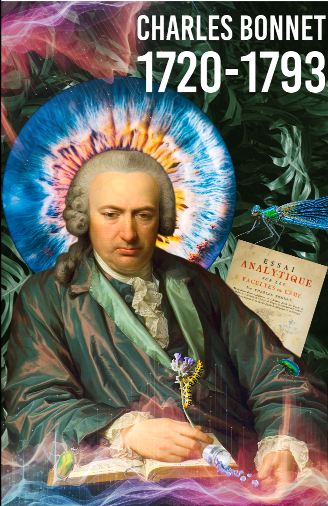

Visions of the Void
A Journey into the Phantoms of the Mind
Experience the silent affliction of Age-Related Macular Degeneration.
Discover the phenomenon of Charles Bonnet Syndrome in immersive VR.
The Enigma of Charles Bonnet
In the twilight of his life in the late 1700s, natural philosopher Charles Bonnet documented a curious condition plaguing his grandfather. Despite being nearly blind from cataracts, his grandfather would see vivid, silent apparitions: figures, patterns, and strange landscapes painting themselves upon the void of his fading vision.
This is the mystery of Charles Bonnet Syndrome. As the eye's sight wanes through conditions like Age-related Macular Degeneration (AMD), the brain desperately fills the darkness with its own conjurations.
Hover over the portrait to reveal the phantoms.


The Veil of the Eye
Other visual afflictions simulated within the experience.
Tunnel Vision
The gentle creeping of shadows from the periphery, leaving only a narrow pinhole of the waking world remaining.
The Scotoma
A dark, impenetrable blotch anchored in the center of one's gaze—a literal blind spot masking the faces of loved ones.
The Artifact
Designed for XR & VR Headsets